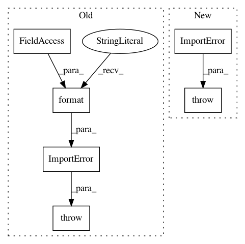

a2fe67c415a7af740fd7ec810b79c9fa80f29516,tensorflow_datasets/core/tf_compat.py,,ensure_tf_install,#,32
Before Change
tf_version = distutils.version.LooseVersion(tf.__version__)
v_1_15 = distutils.version.LooseVersion("1.15.0")
if tf_version < v_1_15:
raise ImportError(
"This version of TensorFlow Datasets requires TensorFlow "
"version >= {required}; Detected an installation of version {present}. "
"Please upgrade TensorFlow to proceed.".format(
required="1.15.0",
present=tf.__version__))
if six.PY2:
logging.warning("TFDS is going to drop Python 2 support. Please "
"update to Python 3.")
After Change
tf_version = distutils.version.LooseVersion(tf.__version__)
min_tf_version = distutils.version.LooseVersion(MIN_TF_VERSION)
if tf_version < min_tf_version:
raise ImportError(
"This version of TensorFlow Datasets requires TensorFlow "
f"version >= {MIN_TF_VERSION}; Detected an installation of version "
f"{tf.__version__}. Please upgrade TensorFlow to proceed."
)
def is_dataset(ds):
Whether ds is a Dataset. Compatible across TF versions.
In pattern: SUPERPATTERN
Frequency: 3
Non-data size: 6
Instances
Project Name: tensorflow/datasets
Commit Name: a2fe67c415a7af740fd7ec810b79c9fa80f29516
Time: 2020-09-21
Author: epot@google.com
File Name: tensorflow_datasets/core/tf_compat.py
Class Name:
Method Name: ensure_tf_install
Project Name: interactiveaudiolab/nussl
Commit Name: 443ad869cbd8c174ee75833eae0c0b1c12b1f602
Time: 2018-04-01
Author: ethanmanilow@gmail.com
File Name: nussl/__init__.py
Class Name: ImportErrorClass
Method Name: __init__
Project Name: matplotlib/matplotlib
Commit Name: c535a7cc882b287c620733c9be03a6960322fc21
Time: 2018-01-09
Author: anntzer.lee@gmail.com
File Name: lib/matplotlib/backends/backend_cairo.py
Class Name:
Method Name: